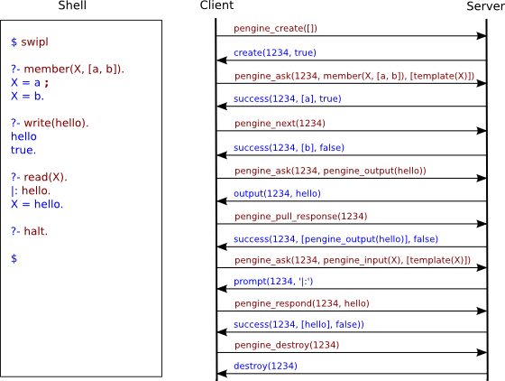

See also http://www.swi-prolog.org/pengines.
This package provides a powerful high-level programming abstraction implemented on top of SWI-Prolog's thread predicates [1] and its HTTP client and server libraries [2]. The package makes it easy to create and query Prolog engines (or Pengines for short), over HTTP, from an ordinary Prolog thread, from a pengine, or from JavaScript running in a web client. Querying follows Prolog's default one-tuple-at-a-time generation of solutions. I/O is also supported.
Possible applications abound, but in particular three kinds of applications stick out: 1) The package provides us with a useful point of departure for the design and implementation of more advanced Prolog-based agent programming platforms, 2) it suggests an elegant and very straightforward approach to the building of a Semantic Web which is Prolog-based in a very radical sense, and, 3) it constitutes an ideal way to interface Prolog with JavaScript, the programming language most commonly available in web browsers.
A pengine is comprised of:
pengine_sandbox.
Everything needed to work with pengines is included in the package,
including a JavaScript library for creating and interacting with
pengines from a web client. However, the web server (in the file
examples/server.pl) should only be regarded as a minimal
example.
Underlying the design of the package is a careful analysis of the conversations taking place between Prolog and a user (which could be a human or another piece of software). Such conversations follow a communication protocol that we refer to as the Prolog Transport Protocol (PLTP). The protocol has been modelled by means of so called communicating finite-state machines [3]. A slight modification of the protocol -- referred to as PLTP(HTTP) -- enables us to synchronize it with HTTP. The diagram below depicts the communicating finite-state machines for PLTP(HTTP) and HTTP. Labels in bold indicate requests, and labels with a slash in front indicate responses.
The diagram below depicts a PLTP run (on the right) corresponding to a user's interaction with Prolog (on the left).‘1234' is the Pengine's identifier, which is a UUID in the actual implementation.

As for the relations between pengines, and for the time being, we have opted for a simple master-slave architecture. Once the master/slave relationships are established, the direction of control is always from the master to the slaves. One or more pengines can be orchestrated by a common master which can be an ordinary Prolog thread, another pengine, or a JavaScript process. A slave is always a pengine, running either locally or remotely with respect to its master. Subject to a setting, slaves are also dependent on their masters in the sense that if a master terminates, so do its slaves. (Note that in the source code we often use the term parent instead of master and child instead of slave. That is, we treat parent/child as synonymous to master/slave.)

The transport format is different depending on the nature of the master. If the master is a JavaScript process, it will (by default) formulate its requests using Prolog syntax, and get responses back as Prologs terms encoded in JSON. If the master is a Prolog process (a Prolog thread or a pengine) it will (again only by default) get responses back as Prolog terms.
Most of the pengine predicates are deterministic, yet they can control one or more pengines solving possibly non-deterministic queries. But the package also offers a number of non-deterministic predicates, built on top of the deterministic ones, that can solve queries "the Prolog way", binding query variables in the process, backtracking for more solutions. Of these predicates, pengine_rpc/3 is the most important. By means of pengine_rpc/3 a pengine running in a pengine server A can call and try to solve a query in the context of another pengine server B, taking advantage of the data being offered by B, just as if the data was local to A. Thus, in theory, a Prolog program, be it a pure Horn clause theory or not, can be as big as the Web. This is something that should make us think about a Semantic Web, especially when we consider the excellent fit between the Pengine library and SWI-Prolog's Semantic Web Library [4]. Adding Pengines functionality to the Cliopatria platform [5] is straightforward.
A note about safety: Because PLTP is layered on top of HTTP, it may utilize any standard HTTP security feature, such as HTTP authentication or SSL. Moreover, subject to a setting, the library uses safe_goal/1 [6], which determines whether it is safe for a slave pengine to try to solve queries asked by a master.
In this example we load the pengines library and use pengine_create/1
to create a slave pengine in a remote pengine server, and inject a
number of clauses in it. We then use pengine_event_loop/2
to start an event loop that listens for three kinds of event terms.
Running main/0 will write the terms q(a), q(b)
and q(c) to standard output. Using
pengine_ask/3 with the option template(X)
would instead produce the output
a, b and c.
:- use_module(library(pengines)).
main :-
pengine_create([
server('https://pengines.swi-prolog.org'),
src_text("
q(X) :- p(X).
p(a). p(b). p(c).
")
]),
pengine_event_loop(handle, []).
handle(create(ID, _)) :-
pengine_ask(ID, q(_X), []).
handle(success(_ID, [X], false)) :-
writeln(X).
handle(success(ID, [X], true)) :-
writeln(X),
pengine_next(ID, []).
Here is another example, showing how to create and interact with a pengine from JavaScript in a way that seems ideal for Prolog programmers and JavaScript programmers alike. Loading the page brings up the browser's prompt dialog, waits for the user's input, and writes that input in the browser window. If the input was’stop', it stops there, else it repeats. Note that I/O works as expected. All we need to do is to use pengine_input/1 instead of read/1 and pengine_output/1 instead of write/1.
See Also:
<html lang="en">
<head>
<title>Pengine Example</title>
</head>
<body>
<h1>Pengine Example</h1>
<div id="out"></div>
<script src="https://ajax.googleapis.com/ajax/libs/jquery/2.0.3/jquery.min.js"></script>
<script src="https://pengines.swi-prolog.org/pengine/pengines.js"></script>
<script type="text/x-prolog">
main :-
repeat,
pengine_input(X),
pengine_output(X),
X == stop.
</script>
<script>
var pengine = new Pengine({
oncreate: handleCreate,
onprompt: handlePrompt,
onoutput: handleOutput
});
function handleCreate() {
pengine.ask('main');
}
function handlePrompt() {
pengine.input(prompt(this.data));
}
function handleOutput() {
$('#out').html(this.data);
}
</script>
</body>
</html>
Our third example shows that a non-deterministic predicate can be called remotely by means of pengine_rpc/2, yet behave exactly as if called locally:
?- use_module(library(pengines)).
?- member(X, [a, b, c, d]),
pengine_rpc('https://pengines.swi-prolog.org', p(X), [
src_list([p(b), p(c), p(d), p(e)])
]),
member(X, [c, d, e, f]).
X = c ;
X = d.
?-
The code sent to a pengine is executed in the context of the module
pengine_sandbox and the safety of goals is validated using safe_goal/1
prior to execution. Any pengine has access to the safe predicates
defined in library(sandbox). If a server wishes to extend
the set of predicates, it must:
domain_predicates.pl
:- use_module(pengine_sandbox:domain_predicates).
library(sandbox),
i.e., predicates that do not have side effects such as accessing the
file system, load foreign extensions, define other predicates outside
the sandbox environment, etc.
Note that the safety of Prolog predicate can typically be proven by library(sandbox).
This may not be the case if untracktable forms of meta-calling are used.
In this case it is adviced to avoid such code. If this is not possible,
the code must be carefully reviewed by hand and of proven to be safe it
may be registered with the sandbox library.
For example, basic RDF access can be granted to pengines using the code below. Please study the sandboxing code carefully before adding declarations.
:- use_module(pengine_sandbox:library(semweb/rdf_db)). :- use_module(library(sandbox)). :- multifile sandbox:safe_primitive/1. sandbox:safe_primitive(rdf_db:rdf(_,_,_)).
In Prolog, solutions to queries are given as bindings which map
variable names into Prolog terms. A programmer using Pengines in a
JavaScript evironment needs to understand how bindings are converted
into JSON. For example, the programmer needs to understand that the
second solution to
append(Xs, Ys, [a,b,c]) is given by the bindings
['Xs'=[a],'Ys'=[b,c]] and that these binding can be
represented in JSON as {"Xs":["a"], "Ys":["b","c"]}.
Pengines defines the following mapping between ground Prolog terms and JSON.
@(true) and @(false) are
mapped to the JSON constants true and false,
respectively.
@(null) is mapped to the JSON constant null.
json(NameValueList), where NameValueList
is a list of Name=Value pairs, is mapped to a JSON object.
{"functor": F, "args": A} where F
is a string representing the functor of T and A is
the list of JSON values representing Ts arguments.
Settings currently recognized by the Pengines library:
Name Type Default Description max_session_pengines integer 1 Maximum number of pengines a client can create. -1 is infinite time_limit number 60 Maximum time between output (in seconds) allow_from list(atom)[*] Specify allowed IP addresses deny_from list(atom)[]Specify denied IP addresses. Applied after allow_from.
The library(pengines) provides an infrastructure for
creating Prolog engines in a (remote) pengine server and accessing these
engines either from Prolog or JavaScript.
Remaining options are passed to http_open/3 (meaningful only for non-local pengines) and thread_create/3. Note that for thread_create/3 only options changing the stack-sizes can be used. In particular, do not pass the detached or alias options..
Successful creation of a pengine will return an event term of the following form:
An error will be returned if the pengine could not be created:
Options is a list of options:
Name = Var terms, providing access to the actual variable
names.
Any remaining options are passed to pengine_send/3.
Note that the predicate pengine_ask/3 is deterministic, even for queries that have more than one solution. Also, the variables in Query will not be bound. Instead, results will be returned in the form of event terms.
true or false, indicating whether we
can expect the pengine to be able to return more solutions or not, would
we call
pengine_next/2.
Defined in terms of pengine_send/3, like so:
pengine_ask(ID, Query, Options) :-
partition(pengine_ask_option, Options, AskOptions, SendOptions),
pengine_send(ID, ask(Query, AskOptions), SendOptions).
Remaining options are passed to pengine_send/3. The result of re-executing the current goal is returned to the caller's message queue in the form of event terms.
Defined in terms of pengine_send/3, as follows:
pengine_next(ID, Options) :-
pengine_send(ID, next, Options).
Defined in terms of pengine_send/3, like so:
pengine_stop(ID, Options) :-
pengine_send(ID, stop, Options).
force(true),
the pengine is killed using abort/0 and pengine_destroy/2
succeeds.pengine_sandbox. The example below creates a new
application
address_book and imports the API defined in the module file
adress_book_api.pl into the application.
:- pengine_application(address_book). :- use_module(address_book:adress_book_api).
alias option when creating the pengine.
true if the pengines is destroyed
automatically after completing the query.
debug_info is present.
console.log(Message) if there is a console. The predicate
pengine_rpc/3 calls debug(pengine(debug), '~w', [Message]).
The debug topic pengine(debug) is enabled by default.
src_text and
src_url options
| Module | is a new temporary module (see in_temporary_module/3) that may be (further) prepared by this hook. |
| Application | (also a module) associated to the pengine. |
| Options | is passed from the environment and should (currently) be ignored. |
| Options | provides the options as given to ask |
Defined in terms of pengine_send/3, as follows:
pengine_respond(Pengine, Input, Options) :-
pengine_send(Pengine, input(Input), Options).
ignore(call(Closure, E)).
A closure thus acts as a handler for the event. Some events are
also treated specially:
Valid options are:
all,
all_but_sender or a Prolog list of NameOrIDs. [not yet
implemented]
copy_term_nat(Query, Copy), % attributes are not copied to the server call(Copy), % executed on server at URL Query = Copy.
Valid options are:
pengines:time_limit.
Remaining options (except the server option) are passed to pengine_create/1.
prolog and various JSON dialects. The hook
event_to_json/3 can be used
to refine the JSON dialects. This hook must be used if a completely
different output format is desired.success(ID, Bindings, Projection, Time, More) and output(ID, Term)
into a format suitable for processing at the client side.
throw(http_reply(authorise(basic(Realm)))) Start a
normal HTTP login challenge (reply 401)
throw(http_reply(forbidden(Path)))) Reject the request
using a 403 repply.
{"type":"var", "name":<string>}
{"type":"atom", "value":<string>}
{"type":"integer", "value":<integer>}
{"type":"float", "value":<float>}
json([Key=Value, ...]): a JSON object Values are
processed recursively.
{"type":"compound", "functor":<string>, "args":<array>}
| Bindings | is a list of Name=Var terms for variables that get their name from the environment. |